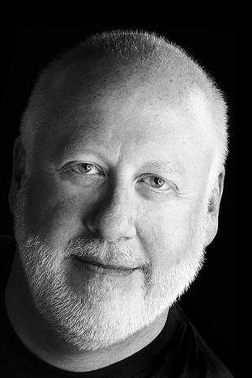

Tom Query
I am an experienced counselor/ therapist with a first hand knowledge of a wide variety of issues, problems and situations. I am excellent in communication, warm, relational, non-judgmental and direct. I work to hear the issues you are seeking help with. I do not use "psychobabble."
I focus on the "here and now" issues you bring and we will explore what has brought you to this place, what you can do and/or what you can be.
I focus on a person's/couple's strengths, not their weaknesses. I do not hesitate to be direct; however, I am welcoming and sensitive to diversity - particularly in faith and spiritual beliefs; race; sexuality; gender; life history choices and family of origin experiences.

AnnaLisa Derenthal
Haunted by past events, consumed by fear, pain, guilt or sadness? I have helped others like you end suffering and overcome fears, finally putting their pasts behind them. I am experienced with grief/loss, panic and anxiety disorders, phobias, depression and low self esteem.
I also work extensively with LGBTQI and Gender Identity issues, and I help transgender people through the transitioning process.
I am open-minded and accepting of all lifestyles and welcome folks from any spiritual belief system, sexual orientations, colors, shapes and sizes.

Anna Baxter
I am passionate about providing a safe space for exploring fear, pain, sadness, conflict, stress, and/or confusion.
I am naturally empathic and have a warm, friendly disposition. I truly believe that we all have the power to change the world with our passion, our dreams, and our smiling faces.
I see individuals, couples, poly units and families to find their innate potential and achieve their dreams, regardless of gender, orientation, race, religion, or love-style.

Melissa Dickinson
I view therapy as an opportunity to develop a healthy relationship where you can grow and explore new opportunities without judgement.
My preference is to keep therapy "label-free", so that we can collaborate on making real progress on the issues standing between you and the life you desire. My space is informal and friendly (I'm a jeans and t-shirt kind of therapist), with the occasional four-legged friend to greet you.
It is my honor to work with a diverse clientele (i.e. ethnicity, gender, sexuality, spirituality, LGBTIQ, etc). I have specialized training in gender and sexuality issues via AASECT and am kink-aware/friendly.

Cheryll Thompson
I believe in creating a therapeutic relationship based on compassion, respect, non-judgment and total acceptance of the unique individual you are. I provide a supportive, safe, healing environment. I provide individual and couples counseling and seminars aimed at helping to create a more fulfilled life.
As my client, you will increase your self-awareness , gain self-confidence and be empowered to make decisions that positively impact your relationships, career, finances, health and ultimately your life.
I bring my experiences, a multi-cultural worldview, a unique perspective born from my Jamaican heritage and my open heart.